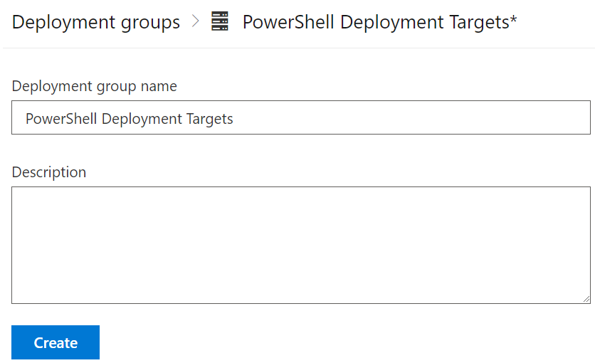

Azure’s Bicep is Microsoft’s newer format for defining Azure resources as code. In terms of look and feel, it’s very similar to Terraform.. If one considers Bicep files as code, then it would be a natural step to ensure that code meets a certain level of quality. In addition to that level of quality, because Bicep is deploying infrastructure, we would want to ensure that infrastructure is well designed and has a chance of successfully deploying.
When Bicep started to be adopted by the team I was working in, I became involved in designing a process to meet those quality goals as well as reduce the number of deployment issues.
Azure DevOps has the concept of Environments, a collection of resources which can be used during a pipeline. At the time of writing the only types of resources that can be used are Virtual Machines and Kubernetes resources. The official documentation on registering a VM resource doesn’t explicitly mention there being any issues with using the same resource across multiple environments, apart from “providing a unique name for the agent”. There’s an important consideration with how the registration process works relating to this.
Recently the team I’m in has been getting into Microsoft’s new Bicep language. As part of a release pipeline, the infrastructure was being deployed – in this case an Azure App Service. Then the application code was being deployed using the standard “Azure App Service Deploy” task. At this particular task, it would error out:
Error: Could not complete the request to remote agent URL 'https://<App Service Name>.scm.azurewebsites.net/msdeploy.axd?site=<App Service Name>'.
Error: The request was aborted: Could not create SSL/TLS secure channel.
The pipeline was being run through our “Default” agent pool, which was a self-hosted agent.
In the last post, we were able to create a Release Pipeline that takes checked and signed Powershell code and deploys it to target servers. In some situations, it may not be desirable or viable to have every server configured as a deployment target. Or there may be a need to have an additional amount of control of the modules that a server gets. To deal with these issues, we can look at setting up a PowerShell Respoistory as an intermediatory step.
The Respository can be as simple as a file share on a server. At the higher end of complexity, it can be a website running NuGet Gallery. For this case, I’ve gone simple. By using a file share, we negate the need for setting up API keys and the like that a NuGet Gallery would need.
Once the PowerShell Respoistory is created, it needs to be registered on the relevant targets. This is achieved using the Register-PSRepository cmdlet, as shown below:
Register-PSRepository -Name psqol -SourceLocation "\\svr14\psrepo\" -PublishLocation "\\svr14\psrepo\" -InstallationPolicy Trusted
If the InstallationPolicy value is set to “Untrusted”, then there will be a user prompt when attempting to install modules from the Repository.
Releasing a build is typically the final step in the process of developing code. For PowerShell, this takes the form of getting our signed scripts and modules onto target servers to be available for use. This can be easily achieved in Azure DevOps.
The deployment tasks will run on the targets will recieve the scripts. Before that, a Deployment Group needs to be created. This is done by navigating to Pipelines > Deplyment Groups and clicking “Add new deployment group”. The group needs to be given a name.

Once we start doing processes like putting PowerShell code into git repositories, signing it and effectively creating new versions of it, it becomes useful to be able to automatically manage the versioning of our scripts and modules. The version number acts as an easy visual indicator of whether the script is the latest or not.
Since the version number will change with each “build”, we will want to put in some sort of place holder value – a token. In my sample module, I change the version value to reference this token:
# Version number of this module.ModuleVersion='#{fullVersion}#'
PowerShell uses Execution Policies to control whether a script can be run or not. Some of these policies rely on scripts being digitally signed by a trusted publisher. By signing your scripts, you can look at implementing a more restrictive Execution Policy that increases security. The first step in this process is getting a certificate.
To sign your scripts, you need a special type of certificate, one for code signing. If your scripts will be for internal use only and your organisation has an internal PKI, then using a code signing certificate from that PKI will be enough. If you are writing scripts or modules for consumption by a broader audience, then you’ll need a code signing certificate from a 3rd party Certificate Authority.
PowerShell has been around for 15 years now. One of the changes that has happened in the IT industry in that time is the rise of DevOps, and the associated tools and technology with it. If we consider the process of creating and consuming PowerShell scripts, it can be applied to the major stages of software development – test, build, release. By using the methods associated with this, we can look at improving the quality of PowerShell code we deliver.
Code testing can cover a broad spectrum of activities. At the most basic end is syntax checking or a “linter” to perform static code checking. At the complex end, there’s things like unit tests. For the sake of this example, I’ll be using a “linter”, the PS Script Analyzer. By using such a tool on our code, we can establish whether it meets minimum quality requirements. PS Script Analyzer comes with an array of built-in rules and can be extended with your own rules.
The first step is to create a pipeline that will perform the code testing activities. In my case, I’m using Azure DevOps, but a similar approach can be used with Github. The pipeline itself is relatively simple, with two tasks. One will install the PS Script Analyzer module, as it’s not installed by default on Azure DevOps agents. The second task will execute the analysis process. The pipeline code is shown below: